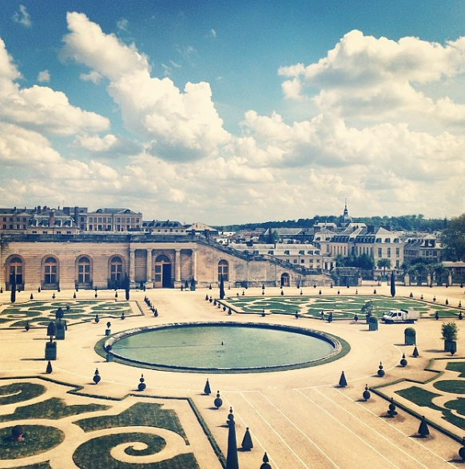

Bosnia
My trip in 2014 is probably the most memorable time I spent in Bosnia, and most likely the last time I'll visit. My family lives in a little
town known as Marin Most. There are maybe fifty people in the whole town, so it's always a big deal when we visit and get to catch up after
years of not seeing each other. In this visit, we took to a trip to the small coastline that Bosnia has, a city called Neum. For such a small
section of land, they packed a lot of hotels and restaurants in there.
Best Memories
- Watching the sun set behind the mountains
- Drinking coffee on a balcony where I took my first steps
- Riding on the back of a tractor on my way to bale hay
 The view from our hotel room in Neum, Bosnia
The view from our hotel room in Neum, Bosnia
France
I was lucky enough to get a chance to study abroad in France my junior year of college. I lived in Lille, a city in northern France just
about fifteen minutes from the Belgian border. Lille is also one of the rainiest cities in France, and after about a week I gave up my mangled umbrella and my
raincoat became a second skin. One of the best things about France is the lax culture, where people are legally only allowed to work thirty-five hours a week and spending
an hour eating breakfast is almost mandatory. I traveled to Paris (honestly overrated), Dunkirk (one of the most beautiful coastlines I've ever seen), Lyon (a city that seems almost orange it's bathed in so much sunlight),
and a bunch of small, coastal towns where I ate a lot of ice cream and traditional French cuisine like vegetable stew made with white wine, sausages covered in cheese, and plates and plates of cheese and meat.
Best Memories
- Exploring the gardens of Versailles
- Being asked if I'm Italian due to my weird French-speaking accent
- Realizing French metro workers will go on strike at the most inopportune moments
Lille, France city center

The Gardens of Versailles
Croatia
Our home in Bosnia is just a short drive from Croatia, another European country that was a part of former Yugoslavia. They speak the same language
as we do in Bosnia, just with a different dialect. We go to Croatia for the beaches. They're nothing like beaches in America; they're rocky and the
water is usually way too cold to swim in, since the Adriatic Sea doesn't get very warm. I still go swimming every time we're there, though I
quickly end up back in the sun, shivering and covered in saltwater.
Best Memories
- Eating giant ice cream cones that cost less than a dollar
- Sitting to get my portrait drawn by an amazing street artist
- Snorkeling and watching tiny fish swim around my legs
A panorama of Dubrovnik, Croatia
Spain
My time in Spain was spent in Barcelona with three other girls, where we proceeded to reenact The Cheetah Girls whenever we were
in a location we recognized from the movie. The most endearing part of Spain was their ability to take life very slowly; they woke up
much later than us, which means they eat much later, which means the first day we walked into a restaurant at noon looking for lunch they
told us lunch doesn't get served until two in the afternoon. Which means we were very hungry for a while that first day. Sunny, warm Barcelona was
quite a departure from rainy, gloomy Lille, France, and it was probably the one time in six months we were able to wear shorts.
Best Memories
- Riding bikes along the beach
- Pantomiming stomachaches in a Spanish pharmacy because we didn't speak Spanish
- Eating seafood paella and drinking sangria for less than €5
The view from Mount Tibidabo, the highest point in Barcelona
Belgium
The best part of Belgium was hands-down the Chocolate Museum, which is exactly as wonderful as it sounds. Samples throughout the building,
sculptures made of chocolate, and the whole history of chocolate told through pictures and stories. The French fry museum was also very neat, and
at the end we got to sample different French fry cuts and seasonings. Obviously my favorite part of traveling to Belgium was getting to eat.
Best Memories
- Getting to see the dog who hangs out of the window in Bruges
- Sampling chocolate beer (gross, do not recommend it)
- Getting to walk in miles of city space where cars aren't allowed
 Crossing over a bridge in Bruges, Belgium
Crossing over a bridge in Bruges, Belgium